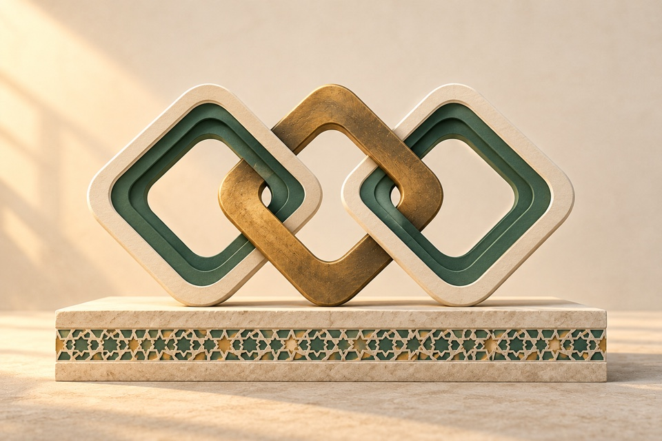

An inheritance, illuminated
The original linked identity, softened by layered paper and a restrained brass finish.
An artwork collection for Hamza
Eighteen new scenes bring warm light, tactile stone and restrained brass to the cut-paper direction. Explore both collections, and choose what feels most like Inheriting Islam.

Collection 01 keeps the simplicity of cut paper. Collection 02 adds sculptural depth, warmer materials, and daylight or lamplight. Both leave room for your own message.
42 artworks · 2 collections · 6 chapters
Explore by purpose. Open an artwork for its suggested use and full-size file.
The original linked identity, softened by layered paper and a restrained brass finish.
A deeper evening version of the doorway, for introductions and moments of transition.
A new composition about connection across places and communities.
For learning resources and a collection worth keeping close.
A focused teaching scene with warmth around the book and quiet space around it.
An alternative to steps: progress expressed through the pages we return to.
A warm evening setting for longer reads and thoughtful pauses.
A calm return point, with the bookmark as the main detail.
A spacious reflection scene with light and rhythm rather than a busy background.
For prayer while travelling, with a compact composition that crops well.
A softer, quieter family scene with the new beginning at its centre.
An evening scene for care and support, without literal depictions of loss.
A generous composition for cohorts, shared study, and community invitations.
A new podcast composition that connects listening with the layered visual identity.
For asking a question, welcoming a message, or opening a conversation.
A restrained Ramadan scene that brings light into the darker palette.
For gratitude, iftar, and sharing simple provisions.
A tactile heritage scene about preserving and caring for what we inherit.
A recognisable brand composition for an opening, announcement, or identity post.
A welcoming entrance for About, introductions, and first visits.
An inclusive gathering place, with room left open for the next visitor.
A visual metaphor for care and an inheritance that grows over time.
A gentle starting point for a first lesson or practice invitation.
For invitations to read, learn, or return to a daily routine.
A patient setting for guided learning with a teacher.
A progress illustration for steady practice, without suggesting a guaranteed outcome.
For the reading collection, book releases, and curated recommendations.
A simple invitation to continue a saved chapter.
A pause between reading and reflection, without depicting scripture.
An illustration for learning milestones; it is not an actual certificate.
A reusable travel-and-prayer scene alongside the original app logo.
For early family life and welcoming a child, without portraying people.
A gentle image of support, remembrance, and practical care.
For generosity, shared provision, and practical community support.
For cohorts and shared learning, with an open, welcoming composition.
A distinct podcast image for thoughtful conversations.
For guest invitations, hospitality, and community stories.
A clear, friendly image for contact and questions.
For Ramadan and evening reflection posts.
For iftar, gratitude, and the beauty of simple moments.
A festive illustration ready for Eid greetings and community invitations.
For stories about patience, preservation, and caring for what we inherit.
No artworks match this view. Try another search or category, or save a few favourites to your shortlist.
Made to be useful
Suggested uses connect each scene to a page or moment. These concepts are separate from the website; none replaces Hamza’s portrait, app logos, book covers, or certificates.
Use the illustrations with your own captions and typography. Preview the crop before posting. Original PNGs are available individually, or download collection 01 and collection 02 separately.
Your shortlist stays in this browser. Download it as a text file to share your choices, or copy an individual artwork link from its detail view.
These are AI-generated artwork proposals for Hamza’s review, not approved brand assets. Illustrations contain no scripture; books have unlettered pages. Read the collection notes.